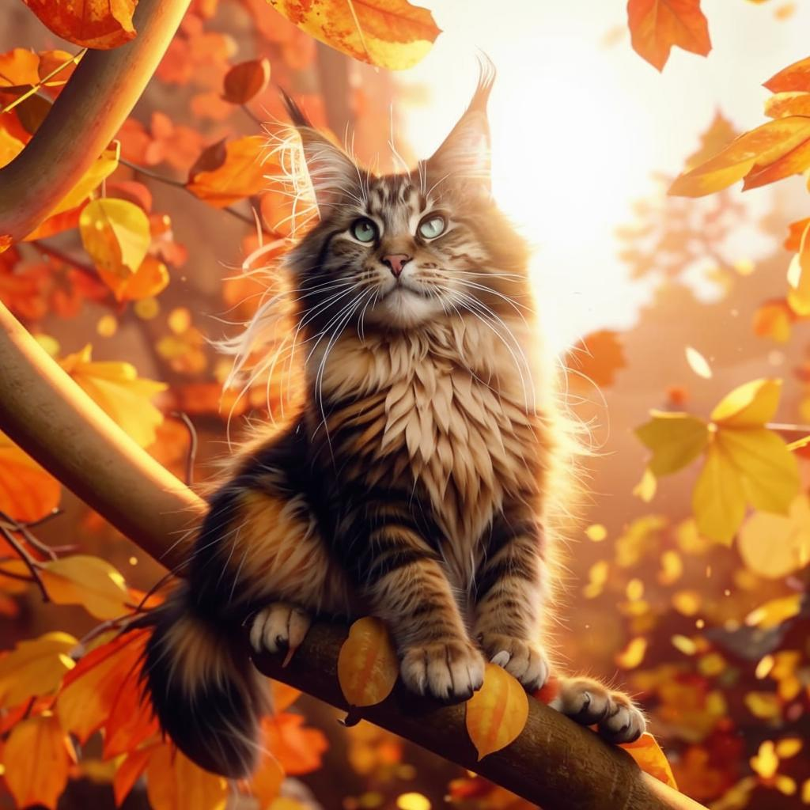
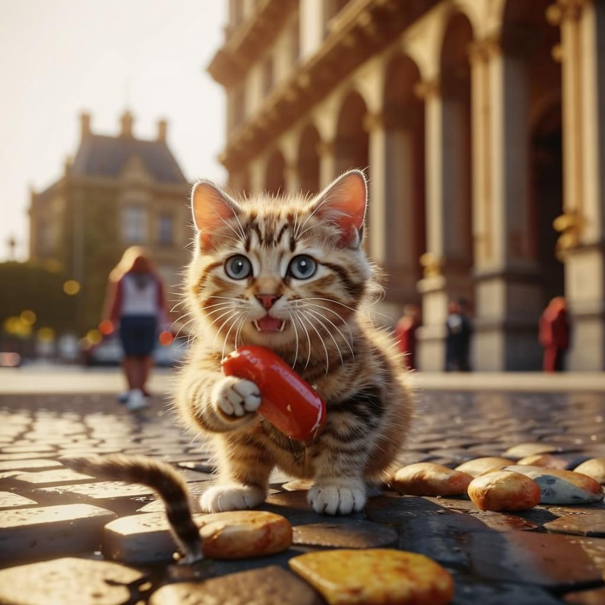

Факт 1
Сфинксы — уникальные бесшерстные кошки с высокой температурой тела , быстрым метаболизмом и «собачьим» характером, требующие регулярного купания.

Мейн-куны — одна из самых крупных и дружелюбных пород домашних кошек. Самцы могут весить до кг, а их хвосты — достигать рекордной длины.

Четвероногие могут предчувствовать беду до того, как она случится. Перед землетрясениями, пожарами и другими стихийными бедствиями они выглядят тревожнее обычнро